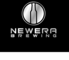
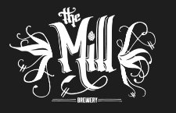
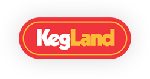
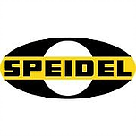
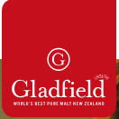
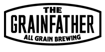
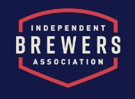

The Victorian
Amateur Brewing Championships (Vicbrew 2018) will be held on 22nd & 23rd
September 2018 at the Belgian Beer Café Eureka, 5 Riverside Quay, Southbank
Melbourne. Melways reference: 2F E7 .
Please note that VicBrew uses the AABC2018 categories and styles, which are
the same as in 2017. 2018
Categories and Styles listing.
Placing (1st, 2nd or 3rd) in any category at Vicbrew 2018 qualifies entrant to submit an entry, in the same category, at AABC 2018 Melbourne Australia.
Online Entries:
Online Entry Registration is available for Vicbrew 2018 From
July 14th via compmaster http://www.compmaster.com.au
Please follow the competition rules on the Compmaster page.
NOTE: Online entries will still need to be delivered to a Vicbrew 2018
collection centre by Early Saturday 01/09/2018
Entries may be submitted upto Saturday 1st September 2018 at the following collection points:
|
Champion Beer of Show
|
Best Club of Show |
|
11. India Pale Ale Category Sponsor
|
Best Novice Brewer
|
|
|
  |
Vicbrew 2018
Entry Collection Points |
8. Bitter Ale Category Sponsor
|
|
||
| 12. Specialty IPA Category Sponsor
|
|
17. Fruit, Spice, Herb or Vegetable Catgory Sponsor |
| 10. Porter |
16. Strong Ales and Lagers Category Sponsor 18. Specialty Beer Category Sponsor  |
|
1. Low Alcohol Category Sponsor  6. Pale Ale Category Sponsor  |
14. Sour Ale Category Sponsor 12. Specialty IPA Category Sponsor |
|
|
3. PilsenerCategory Sponsor  |
20. Cider |
16. German Wheat & Rye Beer 
|
||
NOTE: That for Vicbrew 2018 and AABC 2018 the new AABC 2017 Style Guidelines will be used.
Categories
and Styles list for Vicbrew 2018
AABC 2017 Styleguides in pdf
format, one page per style, to be used at Vicbrew 2018.
AABC 2018 Styleguides in pdf format, condensed version.
Beer Judging Form to be used at Vicbrew 2018
Mead Judging Form to be used at Vicbrew 2018
Cider Judging Form to be used at Vicbrew 2018
We hope to see you at Vicbrew 2018.